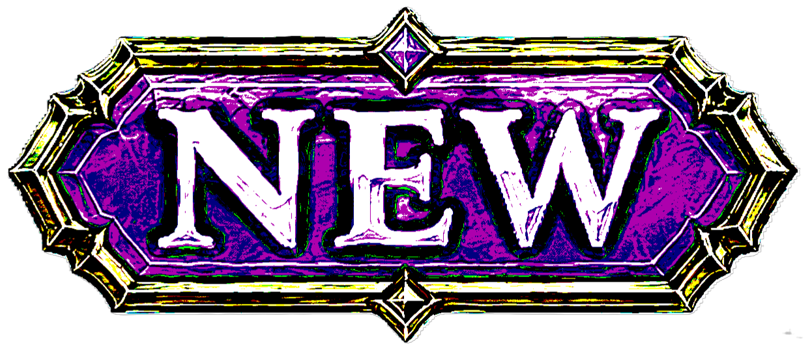
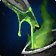
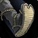
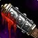
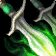
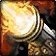
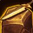

Rogue
Patch Notes
 Balance Changes
Balance Changes
-
 Glaives is now trainable as a baseline skill at level 20.
Glaives is now trainable as a baseline skill at level 20.

-
 Stealth and Vanish no longer break upon resisting a spell.
Stealth and Vanish no longer break upon resisting a spell.
-
 Combo points added to a target will not be reset until you add a
combo point to a different target.
Combo points added to a target will not be reset until you add a
combo point to a different target.
-
Energy no longer uses the "tick" system and instead regenerates in real time. Regeneration goes from 20 Energy per tick to 1 Energy per decisecond.
-

Deadly Poison from multiple Rogues can now be active on the same
target.
-

Kick is now only 1 rank and no longer causes damage.
-

Sap mechanic changed from "Incapacitate" to "Sap". This will allow more humanoids that were previously immune to Sap to be vulnerable to Sap, but still immune to Gouge. Note that anything that removed Sap previously will still remove Sap after the change.
-
Thistle Tea energy gained now decreases with levels past 40.
Note - I believe niche items and consumables are important to any Classic WoW setting. TBC did a good job of making these items a bit less mandatorey, while still being a small buff for those who go the extra mile.
-
Deadly Poison and Instant Poison charges have been increased by an additional 10 per rank trained.
 New Spells and Abilities
New Spells and Abilities
-

Shiv is now trainable at level 40:
-
An instant off-hand weapon attack that applies the poison from your off-hand weapon to the target. Slower weapons require more Energy. Awards 1 combo point. 20 Energy. 6 sec cooldown.
-
 Shuriken Toss is now trainable at Level 35:
Shuriken Toss is now trainable at Level 35:
-
Throw a shuriken at your target that deals damage equal to 30% of your Attack Power. 10 Energy. 10 sec cooldown.
-

Broadside is now trainable at level 50:
-
Fire an overcharged blast at up to 5 enemies in front of you for Physical damage.
Requires a gun in your inventory. 15 sec cooldown.

Hero's Journey
Upon reaching level 60, the Rogue chooses an alliance with one of four Goblin cities. This alliance reduces the amount of reputation lost when committing crimes and the cost to repair and purchase items in that city by 30%. It also unlocks unique mounts and accessories. This choice is permanent and cannot be undone:
- Gadgetzan -
 Bandit's ATV
Bandit's ATV
- Booty Bay -
 Pirate's Jungle Speeder
Pirate's Jungle Speeder
- Ratchet -
 Outlaw's Sandcycle
Outlaw's Sandcycle
- Everlook -
 Mercenary's Mechanocat
Mercenary's Mechanocat
Balance Changes Key labels the expansion Blizzard made that change. labels an idea Blizzard made during SoD.
labels a new idea I came up with.Thanks for exploring! - Mynta | Aggrophobia, fear-bombing mobs since 2009, Andorhal PvP | NA (@mynlol on Discord)